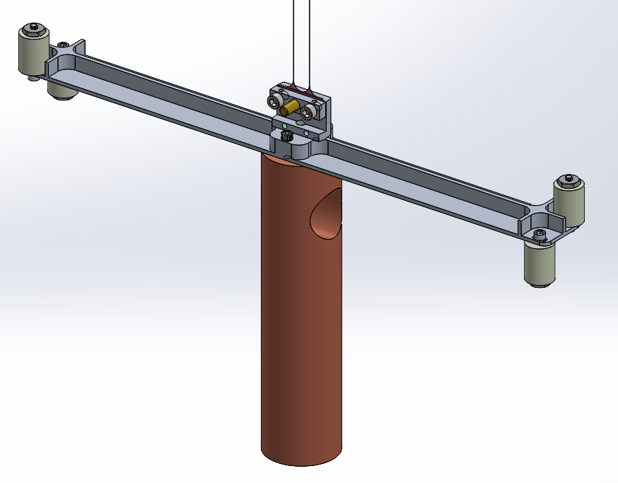

Work Experience

Carnegie Robotics
Mechanical Engineering Intern (2025)
As a mechanical engineering intern in the off-road autonomy team at Carnegie Robotics, I assisted in the ground-up development of a fully autonomous Utility Task Vehicle (pictured) with drone deployment capabilities. My primary project was the design and fabrication of a Lidar, Stereo-Camera, and IMU sensor mounting suite that enabled environmental perception. I also worked on designing shift-linkage and electronic power steering fixtures by utilizing linear and rotary servo motors. Both of my projects were successfully fabricated, field-tested, and delivered to customers by the end of my internship!
More about this robot
National Institute of Standards and Technology (NIST)
Research Intern - Quantum Measurement Group (2024-2025)
As a research intern, my work was focused on the design of a high-precision, low-Q torsion pendulum for integration with an atom interferometer testing the quantum coherence of gravity. Over the course of my internship, I designed a monofilar variant of the pendulum and test masses, utilizing Solidworks FEA for simulating beam deflection. I also worked on the design and requisition of a complementary ultra-high vacuum (UHV) experimental setup, decreasing project lead time by four months.
More about this research
Agentis Air
Mechanical Engineering Intern (2023)
As a mechanical engineering research intern, I designed an experimental setup that enabled real time analysis of clean air delivery rate (CADR). For this project, I utilized an FDM-printed wind tunnel, two optical particle counter (OPC) sensors, and an arduino uno. The end result was real-time readings of filter efficiency, decreasing individual test times by up to 30 minutes.